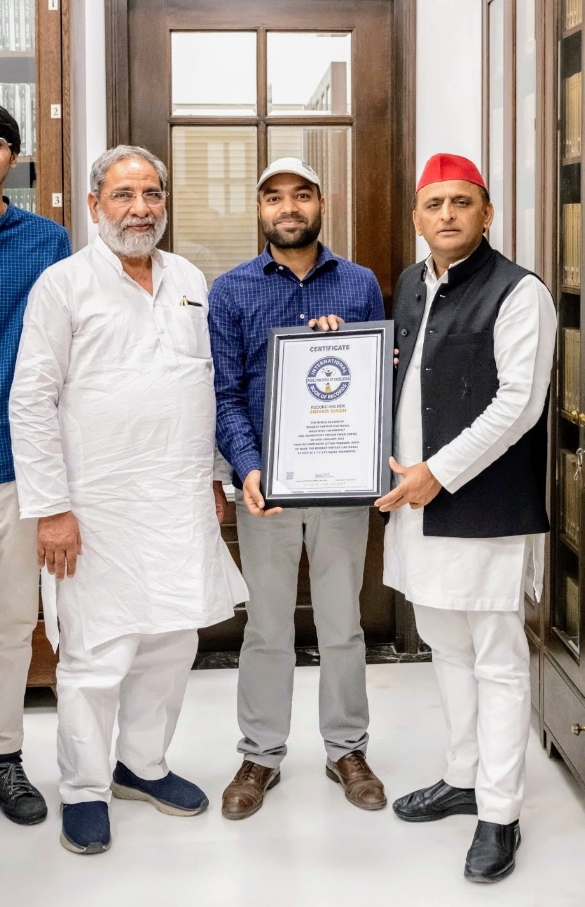

26/11 मुंबई हमला: जानिए चार दिनों तक चले इस आतंकी हमले में कब और कहाँ क्या हुआ था
26 नवंबर 2008 को मुंबई में हुए भीषण आतंकी हमले में 164 लोगों की जान चली गई थी। लश्कर-ए-तैयबा के आतंकवादियों ने रेलवे स्टेशन, होटलों और अस्पतालों समेत कई प्रमुख जगहों को निशाना बनाया था।

26 नवंबर 2008 की रात मुंबई में लश्कर-ए-तैयबा के दस भारी हथियारों से लैस आतंकवादियों ने सिलसिलेवार हमले किए थे। यह आतंकी हिंसा चार दिनों तक चली, जिसमें आतंकवाद निरोधक दस्ते (ATS) प्रमुख हेमंत करकरे समेत 164 लोग मारे गए थे।
हमलावरों ने लियोपोल्ड कैफ़े, छत्रपति शिवाजी टर्मिनस (CST), ताजमहल होटल, ओबेरॉय होटल, कामा अस्पताल और नरीमन हाउस को निशाना बनाया था। सबसे ज़्यादा 58 मौतें सीएसटी रेलवे स्टेशन पर हुईं। ओबेरॉय और ताजमहल होटल में आतंकवादियों ने लोगों को बंधक भी बनाया था, जिन्हें बाद में राष्ट्रीय सुरक्षा गार्ड (NSG) के कमांडो ने मार गिराया।
इस दौरान सुरक्षा बलों ने नौ आतंकवादियों को ढेर किया था, जबकि अजमल आमिर कसाब को ज़िंदा पकड़ लिया गया था जिसे बाद में फाँसी दी गई।
और पढ़ें
सुधांशु त्रिवेदी ने समाजवादी पार्टी के 2027 घोषणापत्र पर उठाए सवाल
भाजपा नेता सुधांशु त्रिवेदी ने समाजवादी पार्टी के नए घोषणापत्र को महज एक औपचारिकता बताया है। उन्होंने विपक्षी दलों पर वादे पूरे न करने का आरोप लगाया है।
राष्ट्रीयमध्य प्रदेश: नागौद SDM सोमेश द्विवेदी और ब्यौहारी SDM अर्चना मिश्रा परिणय सूत्र में बंधे
मध्य प्रदेश के नागौद SDM सोमेश द्विवेदी और ब्यौहारी SDM अर्चना मिश्रा विवाह बंधन में बंध गए हैं। रीवा में कॉलेज के दिनों से शुरू हुई उनकी दोस्ती प्रशासनिक सेवा तक पहुंची और अब शादी में बदल गई है।
 राष्ट्रीय
राष्ट्रीयसंसद सत्र का प्रस्ताव, लोकसभा 30 नवंबर और राज्यसभा 2 दिसंबर को बैठेगी
केंद्रीय मंत्री किरेन रिजिजू ने बताया कि सरकार ने लोकसभा स्पीकर और राज्यसभा के सभापति से संसद के दोनों सदनों की बैठकें फिर से बुलाने का अनुरोध किया है।

राष्ट्रीयसपा ने जारी किया 2027 चुनाव का मैनिफ़ेस्टो, आज़म ख़ान ने जेल के दिनों को किया याद
समाजवादी पार्टी ने 2027 के उत्तर प्रदेश विधानसभा चुनाव के लिए अपना मैनिफ़ेस्टो जारी कर दिया है। इस दौरान वरिष्ठ नेता आज़म ख़ान ने जेल में बिताए अपने दिनों का ज़िक्र करते हुए अखिलेश यादव की तारीफ़ की।